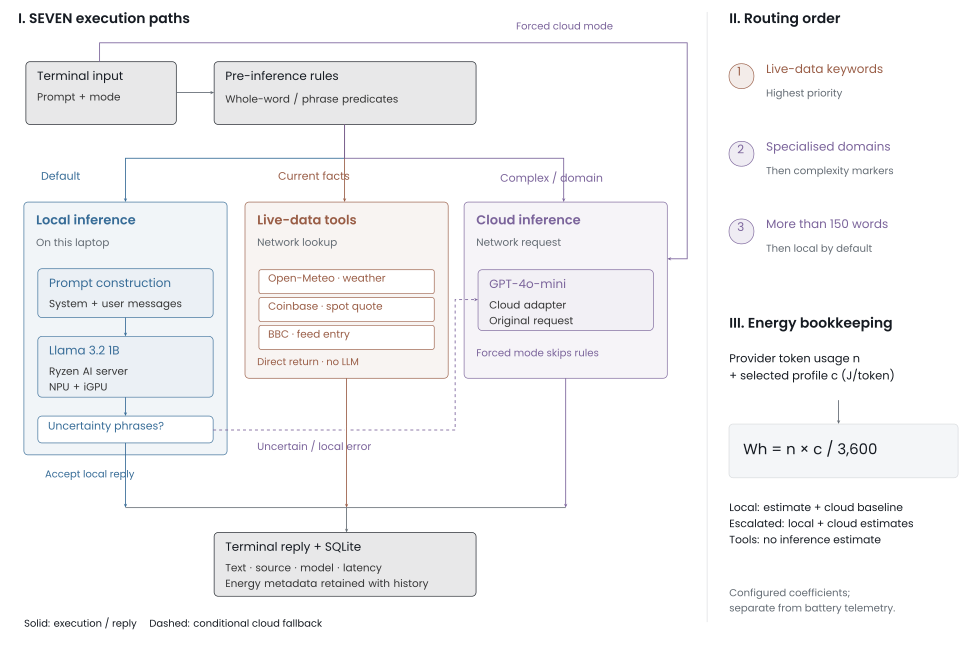
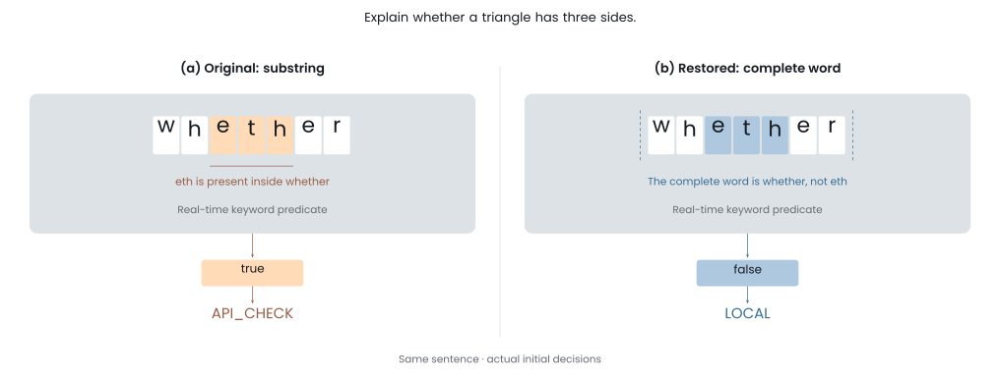
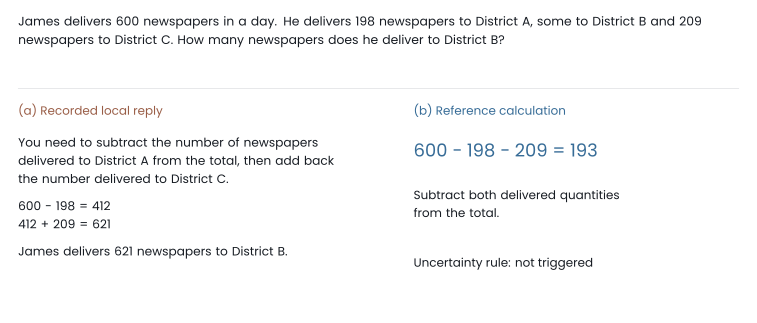
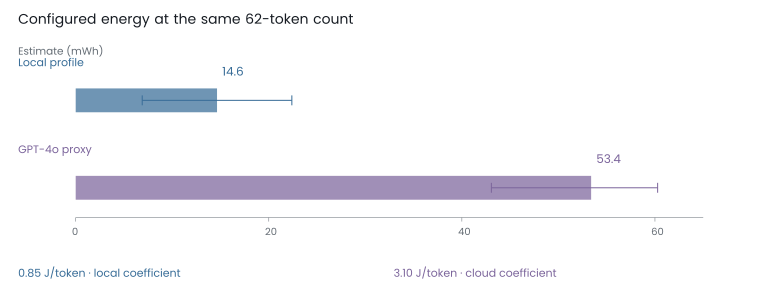
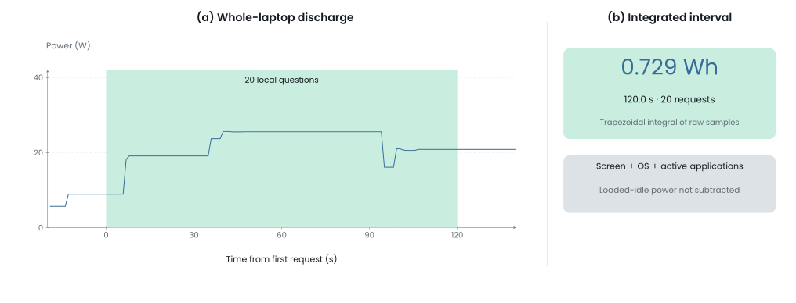

Three paths, one conversation
How much work can stay on the machine in front of us?
We built SEVEN around a small local model, live-data tools and a cloud fallback. A set of rules chooses a path before generation. The terminal keeps that path with the answer, including when a saved conversation is reopened.
My contribution to the original team was the local-model adapter: connecting to Lemonade Server, sending prompts, normalising replies and token usage, and handling retries. Samin built the cloud adapter; Yusuf handled routing and prompts; Hamanpreet worked on energy estimates; Aadil handled the terminal interface.
The restored application runs Llama 3.2 1B through a Ryzen AI runtime. Supported weather, cryptocurrency and news requests return results from Open-Meteo, Coinbase and BBC directly, preserving their sources and numbers. Domain and complexity rules select GPT-4o-mini; a local failure or explicit uncertainty phrase can also trigger a cloud attempt.

Getting the application running again raised a more useful set of questions: what does a routing rule actually recognise, when does a wrong answer escape escalation, and what can the laptop’s power measurements establish?
One substring changed the execution path
The original classifier searched for cryptocurrency symbols anywhere in the text. The symbol eth therefore matched inside whether. A question about a triangle entered the live-data path before the local model was considered.

I then ran both versions over the same 15,011 Dolly-15k prompts. The restoration added word boundaries and removed the ambiguous keyword price. Most decisions stayed the same; the table isolates those that changed.
| Original path | Restored path | Prompts |
|---|---|---|
| Live-data check | Local | 1,598 |
| Live-data check | Cloud | 956 |
| Cloud | Local | 2 |
These are changes in rule behaviour. Dolly does not label the correct destination, so the counts cannot establish routing accuracy. Word boundaries also leave intent unresolved: “What is the latest version of Python?” still selects live data, although SEVEN has no software-release tool.
Wrong answers can pass the uncertainty check
SEVEN looks for four explicit uncertainty phrases in a local reply. That makes escalation inexpensive, but a wrong answer need not contain one. I tested the same seeded sample of 60 GSM8K questions under three preserved local configurations.
| Local configuration | Numeric matches | Flagged by rule | Unflagged misses |
|---|---|---|---|
| Original / plaintext | 11 | 8 | 41 |
| Template exposed | 13 | 0 | 47 |
| Revised local prompt | 22 | 0 | 38 |
The revised-prompt run produced more numeric matches, yet none of its 38 non-matching replies triggered the uncertainty rule. These single stochastic runs do not isolate why the match count changed. They do show why absence of an uncertainty phrase is a weak acceptance check.

The response above fails both the subtraction and the choice of operation. Its wording still passes the phrase check. The study grades only the last number against the reference answer; it does not score reasoning. The complete paired responses preserve what that simple grade leaves out.
What SEVEN estimates for local and cloud inference
The energy display compares a completed local reply with a hypothetical cloud run at the same token count. In the recorded France example, the local profile gives 14.6 mWh and the cloud profile gives 53.4 mWh: a configured difference of 38.8 mWh.

The calculation is token count × joules per token, converted to Wh. The local coefficient is 0.85 J/token; the cloud coefficient is 3.10 J/token. These coefficients make the comparison change proportionally with token count; they do not establish the electricity used by either request.
There is also a model mismatch: the default cloud profile is labelled GPT-4o, while the adapter calls GPT-4o-mini. The local profile describes an NPU, while the demonstrated runtime uses NPU and iGPU together. The comparison is therefore a proxy built into the application, not a calibrated result for this hardware and cloud model. The estimator details preserve its assumptions and exact calculation.
What the battery actually measured
The project’s sustainability goal needs a physical measurement. During the local studies, I sampled battery-reported discharge power at roughly one-second intervals. The figure shows the first 20-question block of the original run, with loaded-idle periods on either side.

This interval consumed 0.729 Wh over 120.0 seconds. It includes the screen, operating system and other active applications. The three complete studies consumed 2.543, 2.424 and 2.163 Wh during their inference blocks, but their different replies, durations and background activity prevent an efficiency ranking.
No cloud energy was measured. The Wh values shown inside SEVEN are profile-based estimates, separate from this telemetry. A savings claim would need comparable successful workloads, repeated trials and a defined measurement boundary for both execution paths.
A working system, with testable limits
Restoring SEVEN made the original idea usable again: one conversation can reach a local model, a current source or a cloud model, and retain where each answer came from. Testing it exposed the limits of the rules behind that experience.
The next steps follow directly: evaluate routing against labelled intent, evaluate escalation against answer correctness, and measure complete requests—including failed attempts—under a controlled power protocol.
Methods and source
The walkthrough shows the restored application. The November 12 studies retain their earlier source snapshots; later repairs do not change those recorded results. GSM8K uses test rows sampled with seed 7, Llama 3.2 1B, temperature 0.7 and a 512-token limit.
Study methods, complete responses and downloads
Restored application and setup · Original source
Terminal footage is an unchanged application capture. Figures use verified records and authored TikZ/PGFPlots; AI assistance supported code and typesetting. No generative image tool was used. Presentation follows the portfolio’s Omni format and Shikun Liu’s Clarity.